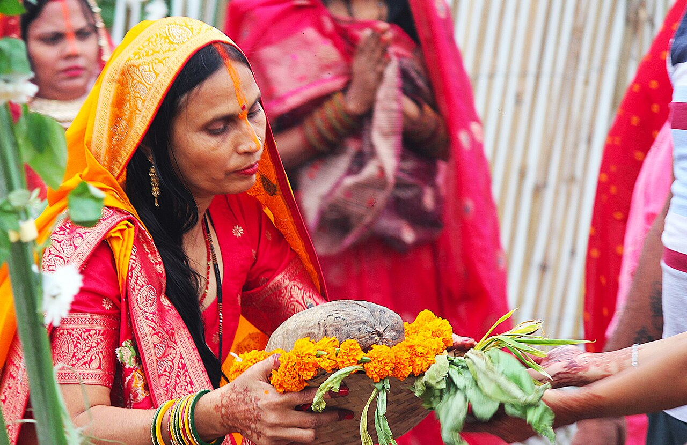

Public safety information
Safety & emergency सुरक्षा एवं आपातकाल
Verified public emergency numbers and official contacts, general precautions for ghat visitors, and readiness tools for organisers.
Emergency services आपातकालीन सेवाएँ
JalDrishti does not dispatch emergency services, track ambulances or confirm that rescue teams are available. Tap a number to call the public service directly.
JalDrishti कोई आपातकालीन सेवा नहीं भेजता। सीधे कॉल करने के लिए नंबर पर टैप करें।
-
112
Emergency response आपातकालीन सहायता
Dial 112 (MP Police ERSS): police, with links to fire (101) and health (108). 24/7 in all districts.
Source: dial112.mppolice.gov.in - 108
- 101
General precautions at ghats घाट पर सावधानियाँ
Common-sense precautions, not an official advisory. Always follow instructions from police, BMC staff and on-site volunteers.
- Stay behind barricades and inside marked bathing limits. Do not enter deep or unmarked water.
- Watch your step. Ghat steps can be slippery with algae and mud, especially near the water's edge.
- Keep children close and never leave them unattended near the water.
- Avoid crowding at the water's edge; use the marked entry and exit routes.
- Do not drink lake water. Past MPPCB readings often breached bathing limits; JalDrishti cannot tell you today's water quality.
- In an emergency, call 112 and tell responders the ghat name and the nearest landmark.
Useful Contacts जरूरी संपर्क
These are existing public contacts of government offices, listed on their official websites. They are not a dedicated JalDrishti helpline, and JalDrishti is not affiliated with them.
ये सरकारी कार्यालयों के मौजूदा सार्वजनिक संपर्क हैं, जो उनकी आधिकारिक वेबसाइटों पर दिए गए हैं। यह JalDrishti की कोई अलग हेल्पलाइन नहीं है।
-
Bhopal Municipal Corporation नगर पालिक निगम भोपाल
Commissioner's office, Harshwardhan Complex, Mata Mandir, Bhopal
Source: District Bhopal (bhopal.nic.in) -
MP Pollution Control Board, Regional Office Bhopal म.प्र. प्रदूषण नियंत्रण बोर्ड, क्षेत्रीय कार्यालय भोपाल
E-5, Paryavaran Parisar, Arera Colony, Bhopal: water-quality and pollution matters
Source: MPPCB office address list (PDF) -
Madhya Pradesh CM Helpline मुख्यमंत्री हेल्पलाइन
State public grievance helpline
Source: District Bhopal helplines (bhopal.nic.in)

Chhath Puja ghat readiness छठ पूजा घाट तैयारी
Planning tools for ghat-side safety: a readiness checklist, a list of additional ghats, a resource directory and an incident log.
Readiness checklist तैयारी सूची
Track each safety item as Pending, In progress or Verified. “Verified” here means verified by the person using this browser, not by an authority.
Add a ghat घाट जोड़ें
For immersion or Chhath sites not in the historical dataset. New ghats get no water-quality score and no CRI rank: no monitoring data exists for them here.
Added ghats (local demo)
Incident log घटना दर्ज करें
Logged incidents (local demo, not sent)
Resource directory संसाधन सूची
Volunteers, workers, first-aid points, divers and rescue teams for each ghat. JalDrishti lists an entry only with an official source. No verified roster has been published for 2026 yet, so these lists are intentionally empty.